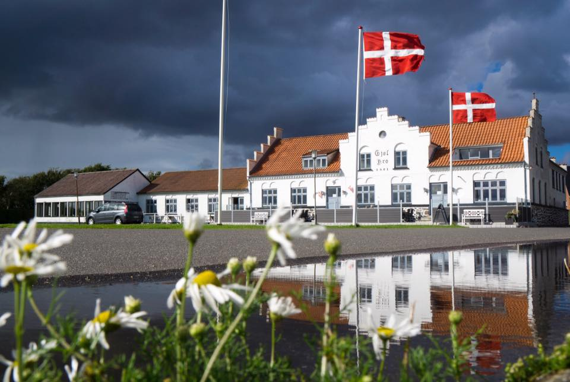

Inn Gjøl
The inn is where Hans Kirk wrote his novel ”The Fishermen” (Danish: Fiskerne), describing the conflict between the residents of Gjøl and a group of newcomer fishermen.
History Of The Inn
The historical inn dates all the way back to 1851, when it had a thatch roof and served as the town’s gathering point. Unfortunately, it burned down around 1900 and was rebuild the year after, giving it its current form with stepped gables. The gables are easily seen from the Limfjord and can be used as a sort of sea mark that tells sailors that they have arrived in Gjøl.
| Monday | Closed |
|---|---|
| Tuesday | Closed |
| Wednesday | 12:00 - 22:00 |
| Thursday | 12:00 - 22:00 |
| Friday | 12:00 - 22:00 |
| Saturday | 12:00 - 22:00 |
| Sunday | 12:00 - 22:00 |

More Than Just Inn
That being said, it’s not just the history of Gjøl Kro that should attract visitors. We –myself Peter and my fiancée Natazja –leased the inn back in March 2020, with the vision of making the inn a sort of gathering place for all again. We are hoping we can breathe new life into the old inn, filling the place with the sound of laughter and even the rolling of dice in a game between friends.